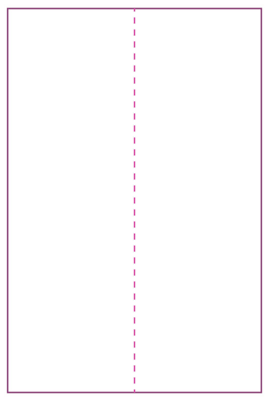
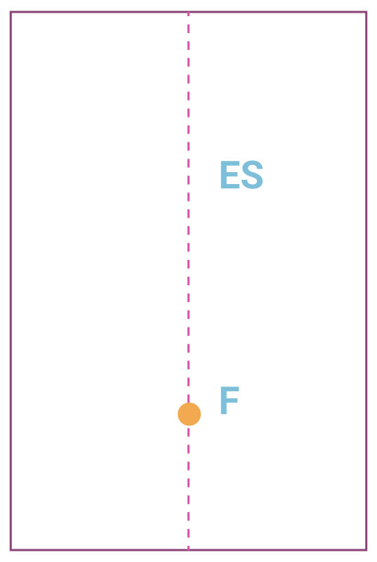
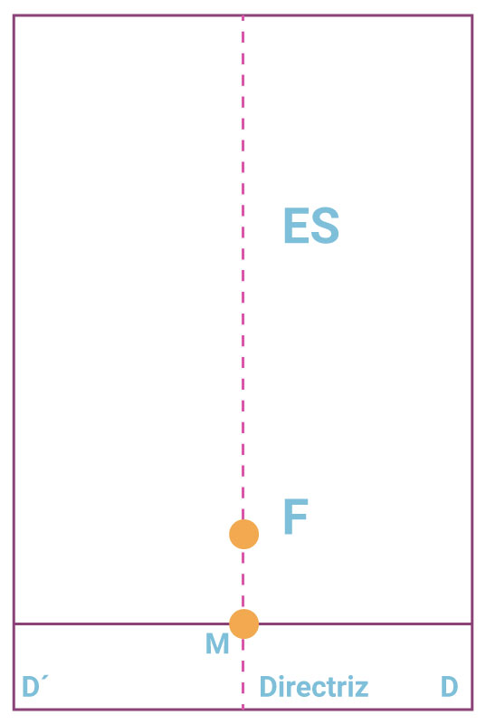
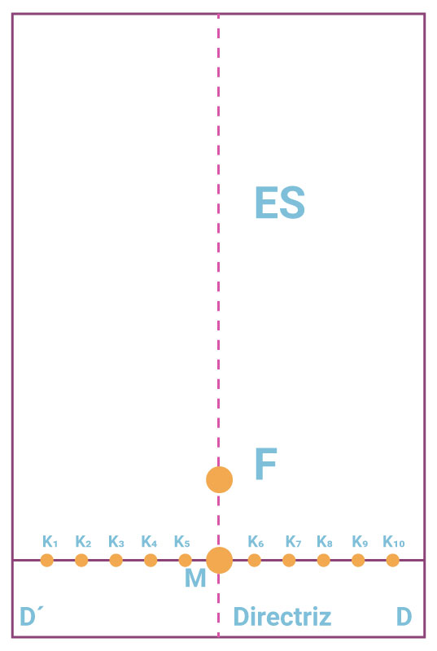
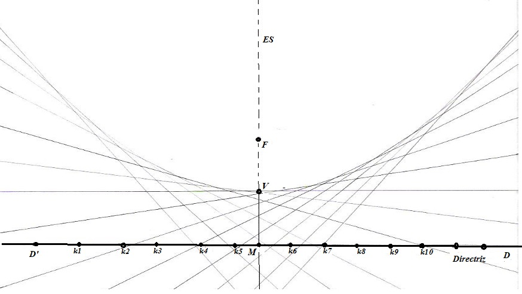

Un lugar geométrico se establece por un conjunto de puntos que tienen una propiedad o regularidad común. Entre los ejemplos notables de lugares geométricos tenemos:
Con esta unidad como ya se mencionó, iniciamos el estudio de las secciones cónicas, para lo cual vas a completar lo que se te pide en las actividades 1 y 2.
Actividad 1. Construcción de una parábola por medio de dobleces.Para construir este lugar geométrico con dobleces vas a realizar lo siguiente en tu hoja de papel cebolla.
| 1. Dobla tu hoja a la mitad longitudinalmente de manera que se marque un doblez y punteala con la regla y un lápiz como se muestra en la siguiente imagen.  | 2. El segmento marcado (punteado) sobre la hoja se llama Eje de simetría o Focal de la parábola y lo simbolizamos con las letras ES, marca un punto sobre el eje focal como se muestra en la siguiente imagen y asígnale la letra F, el punto recibe el nombre de Foco de la parábola.  |
| 3. Realiza un doblez debajo del punto F perpendicular al doblez anterior, el punto de intersección de estos dos dobleces será el punto M. Esta recta perpendicular que se forma recibe el  nombre de directriz (DD'). | 4. Ahora marca varios puntos sobre la directriz, a la izquierda y a la derecha del punto M, localiza los puntos $k_1, k_2, k_3, k_4, k_5, k_6, k_7, k_8, k_9, … k_n$ la distancia entre ellos no necesariamente tiene que ser la misma.  |
| 5. Haz coincidir cada uno de los puntos $k_1, k_2, k_3, … k_n$ con el punto F, y traza un doblez en cada una de estas coincidencias hasta terminar con el último punto $k_n$ . Al unir el punto M con el punto Fobtienes el punto medio representado por la letra V. | 6. Después de repetir el procedimiento anterior, para cada uno de los puntos marcados sobre la directriz se obtiene el lugar geométrico pedido. Escanea tu construcción y colócala en el siguiente espacio. |

Realiza la siguiente actividad.